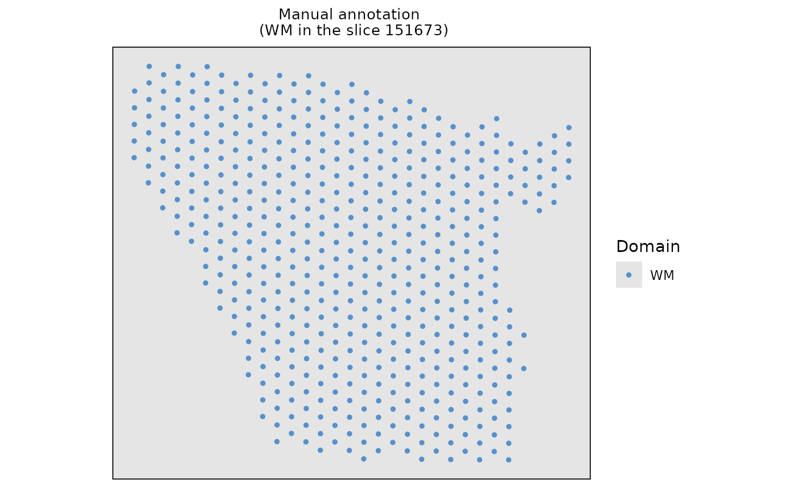
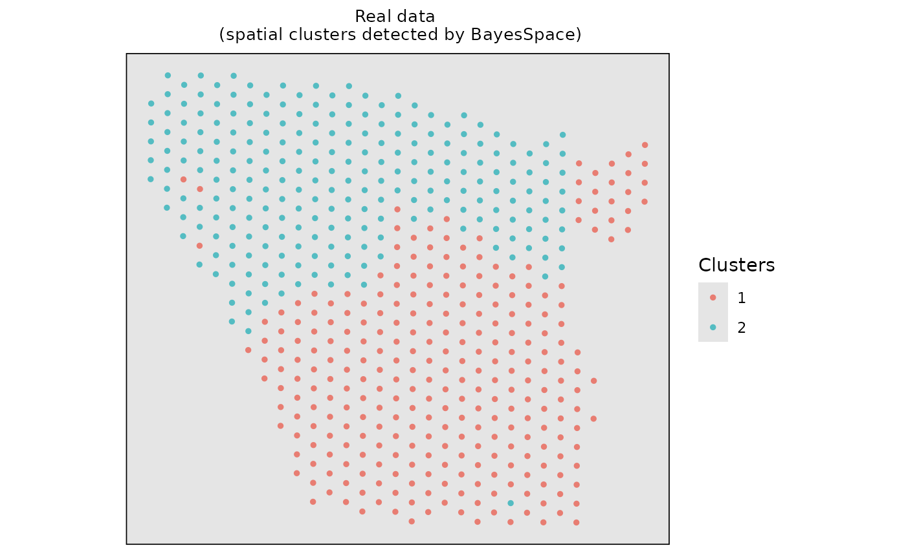

Perform ClusterDE on a spatial dataset (one domain)
Siqi Chen
Computer Science, Central South Universitysiqichen4477@gmail.com
Dongyuan Song
Department of Genetics & Genome Sciences, UConn HealthBioinformatics IDP, University of California, Los Angelesdongyuansong@ucla.edu
27 August 2026
Source:vignettes/ClusterDE-spatial-onedomain.Rmd
ClusterDE-spatial-onedomain.RmdDownload data
We selected white matter (WM) of 151673 slice from the LIBD Human Dorsolateral Prefrontal Cortex (DLPFC) dataset, which is downloaded in the spatialLIBD R package.
data(dlpfc_onedomain, package = "ClusterDE")Visualize the real data on spatial mapping.
# Visualize the real spatial domains
domains <- data.frame(Xaxis = dlpfc_onedomain$spatial1, Yaxis = dlpfc_onedomain$spatial2, Domain = dlpfc_onedomain$cell_type)
#> Loading required namespace: SeuratObject
ggplot2::ggplot(domains, ggplot2::aes(x = Xaxis, y = Yaxis, col = Domain)) +
ggplot2::geom_point(size = 1.0) +
ggplot2::ggtitle("Manual annotation \n (WM in the slice 151673)") +
ggplot2::coord_equal() +
ggplot2::theme(
plot.title = ggplot2::element_text(size = 10, hjust = 0.5),
panel.grid = ggplot2::element_blank(),
panel.background = ggplot2::element_rect(fill = "gray90"),
panel.border = ggplot2::element_rect(color = "black", fill = NA, size = 0.6),
axis.title.x = ggplot2::element_blank(),
axis.title.y = ggplot2::element_blank(),
axis.ticks.x = ggplot2::element_blank(),
axis.ticks.y = ggplot2::element_blank(),
axis.text.x = ggplot2::element_blank(),
axis.text.y = ggplot2::element_blank()
) +
ggplot2::scale_color_manual(values = "#5791cc")
#> Warning: The `size` argument of `element_rect()` is deprecated as of ggplot2 3.4.0.
#> ℹ Please use the `linewidth` argument instead.
#> This warning is displayed once every 8 hours.
#> Call `lifecycle::last_lifecycle_warnings()` to see where this warning was
#> generated.
Run the BayesSpace + Seurat pipeline
First, we employed the BayesSpace for spatial clustering. Please note that ClusterDE is designed for 1 vs 1 comparison; therefore, we obtain two spatial clusters for illustration purpose.
# Construct the input of BayesSpace based on real dataset
# The input of BayesSpace is sce object
dlpfc_onedomain_sce <- SingleCellExperiment::SingleCellExperiment(
list(counts = Seurat::GetAssayData(dlpfc_onedomain, layer = "counts"))
)
# Add colData information of SingleCellExperiment
dlpfc_onedomain_sce$row <- dlpfc_onedomain@meta.data$row
dlpfc_onedomain_sce$col <- dlpfc_onedomain@meta.data$col
dlpfc_onedomain_sce$array_row <- dlpfc_onedomain@meta.data$row
dlpfc_onedomain_sce$array_col <- dlpfc_onedomain@meta.data$col
dlpfc_onedomain_sce$spatial1 <- dlpfc_onedomain@meta.data$spatial1
dlpfc_onedomain_sce$spatial2 <- dlpfc_onedomain@meta.data$spatial2
# Log-normalize the count data
RNGkind("L'Ecuyer-CMRG")
seed <- 123
set.seed(seed)
dlpfc_onedomain_sce <- BayesSpace::spatialPreprocess(
dlpfc_onedomain_sce,
platform = "Visium",
n.PCs = 7,
log.normalize = T
)
# Clustering with BayesSpace
dlpfc_onedomain_sce <- BayesSpace::spatialCluster(
dlpfc_onedomain_sce,
q = 2,
platform = "Visium",
d = 7,
init.method = "mclust",
model = "t",
gamma = 2,
nrep = 1000,
burn.in = 100,
save.chain = T
)
#> Neighbors were identified for 513 out of 513 spots.
#> Fitting model...
#> Calculating labels using iterations 101 through 1000.
dlpfc_onedomain <- Seurat::as.Seurat(dlpfc_onedomain_sce)
#> Warning: `PackageCheck()` was deprecated in SeuratObject 5.0.0.
#> ℹ Please use `rlang::check_installed()` instead.
#> ℹ The deprecated feature was likely used in the Seurat package.
#> Please report the issue at <https://github.com/satijalab/seurat/issues>.
#> This warning is displayed once every 8 hours.
#> Call `lifecycle::last_lifecycle_warnings()` to see where this warning was
#> generated.
#> Warning: The `slot` argument of `SetAssayData()` is deprecated as of SeuratObject 5.0.0.
#> ℹ Please use the `layer` argument instead.
#> ℹ The deprecated feature was likely used in the Seurat package.
#> Please report the issue at <https://github.com/satijalab/seurat/issues>.
#> This warning is displayed once every 8 hours.
#> Call `lifecycle::last_lifecycle_warnings()` to see where this warning was
#> generated.
#> Warning: Keys should be one or more alphanumeric characters followed by an
#> underscore, setting key from PC to PC_
Seurat::Idents(dlpfc_onedomain) <- "spatial.cluster"Visualize the spatial clustering results based on the real data.
# Visualize the spatial cluster
clusters <- data.frame(
Xaxis = dlpfc_onedomain$spatial1,
Yaxis = dlpfc_onedomain$spatial2,
Clusters = as.character(dlpfc_onedomain$spatial.cluster)
)
ggplot2::ggplot(clusters, ggplot2::aes(x = Xaxis, y = Yaxis, col = Clusters)) +
ggplot2::geom_point(size = 1.0) +
ggplot2::coord_equal() +
ggplot2::ggtitle("Real data \n (spatial clusters detected by BayesSpace)") +
ggplot2::theme(
plot.title = ggplot2::element_text(size = 10, hjust = 0.5),
panel.grid = ggplot2::element_blank(),
panel.background = ggplot2::element_rect(fill = "gray90"),
panel.border = ggplot2::element_rect(color = "black", fill = NA, size = 0.6),
axis.title.x = ggplot2::element_blank(),
axis.title.y = ggplot2::element_blank(),
axis.ticks.x = ggplot2::element_blank(),
axis.ticks.y = ggplot2::element_blank(),
axis.text.x = ggplot2::element_blank(),
axis.text.y = ggplot2::element_blank()
) +
ggplot2::scale_color_manual(values = c("#e87d72", "#54bcc2"))
Then, we used the common DE method (Wilcoxon Rank Sum Test) to identify domain marker genes between the two spatial clusters.
original_deg <- Seurat::FindMarkers(
object = dlpfc_onedomain,
ident.1 = 1,
ident.2 = 2,
test.use = "wilcox",
logfc.threshold = 0,
min.pct = 0,
min.cells.feature = 1,
min.cells.group = 1
)
#> Warning: The `slot` argument of `GetAssayData()` is deprecated as of SeuratObject 5.0.0.
#> ℹ Please use the `layer` argument instead.
#> ℹ The deprecated feature was likely used in the Seurat package.
#> Please report the issue at <https://github.com/satijalab/seurat/issues>.
#> This warning is displayed once every 8 hours.
#> Call `lifecycle::last_lifecycle_warnings()` to see where this warning was
#> generated.
original_pval <- original_deg$p_val_adj
names(original_pval) <- rownames(original_deg)
print(paste0("Seurat found ", sum(original_deg$p_val_adj < 0.05), " DEG"))
#> [1] "Seurat found 68 DEG"Find DEGs using ClusterDE
We use spatial coordinates as covariates to generate synthetic null data, then apply the same BayesSpace clustering method as target data.
set.seed(seed)
null_data <- ClusterDE::constructNull(
dlpfc_onedomain,
data_type = "spatial",
formula = "s(spatial1, spatial2, bs = 'gp', k = 4)",
other_covariates = c("spatial1", "spatial2")
)
#> Registered S3 method overwritten by 'gamlss':
#> method from
#> print.ri bit
#> Registered S3 method overwritten by 'scDesign3':
#> method from
#> predict.gamlss gamlss
#> Input Data Construction Start
#> Input Data Construction End
#> Start Marginal Fitting
#> Marginal Fitting End
#> Start Copula Fitting
#> Convert Residuals to Multivariate Gaussian
#> Converting End
#> Copula group 1 starts
#> Copula Fitting End
#> Start Parameter Extraction
#> Parameter
#> Extraction End
#> Start Generate New Data
#> Use Copula to sample a multivariate quantile matrix
#> Sample Copula group 1 starts
#> New Data Generating End
null_obj_sce <- SingleCellExperiment::SingleCellExperiment(list(counts = null_data))
null_obj_sce$row <- dlpfc_onedomain@meta.data$row
null_obj_sce$col <- dlpfc_onedomain@meta.data$col
null_obj_sce$array_row <- dlpfc_onedomain@meta.data$row
null_obj_sce$array_col <- dlpfc_onedomain@meta.data$col
null_obj_sce$spatial1 <- dlpfc_onedomain@meta.data$spatial1
null_obj_sce$spatial2 <- dlpfc_onedomain@meta.data$spatial2
null_obj_sce <- BayesSpace::spatialPreprocess(
null_obj_sce,
platform = "Visium",
n.PCs = 7,
log.normalize = T
)
null_obj_sce <- BayesSpace::spatialCluster(
null_obj_sce,
q = 2,
platform = "Visium",
d = 7,
init.method = "mclust",
model = "t",
gamma = 2,
nrep = 1000,
burn.in = 100,
save.chain = T
)
#> Neighbors were identified for 513 out of 513 spots.
#> Fitting model...
#> Calculating labels using iterations 101 through 1000.
null_obj <- Seurat::as.Seurat(null_obj_sce)
#> Warning: Keys should be one or more alphanumeric characters followed by an
#> underscore, setting key from PC to PC_
Seurat::Idents(null_obj) <- "spatial.cluster"Compare gene p-values from target and synthetic data, we observe that ClusterDE does not detect any DEG.
null_deg <- Seurat::FindMarkers(
object = null_obj,
ident.1 = 1,
ident.2 = 2,
test.use = "wilcox",
logfc.threshold = 0,
min.pct = 0,
min.cells.feature = 1,
min.cells.group = 1
)
null_pval <- null_deg$p_val_adj
names(null_pval) <- rownames(null_deg)
deg <- ClusterDE::callDE(original_pval, null_pval)
print(paste0("ClusterDE found ", sum(deg$record >= 0.5), " DEG"))
#> [1] "ClusterDE found 0 DEG"Session information
sessionInfo()
#> R version 4.5.1 (2025-06-13)
#> Platform: x86_64-pc-linux-gnu
#> Running under: Ubuntu 24.04.4 LTS
#>
#> Matrix products: default
#> BLAS/LAPACK: FlexiBLAS OPENBLAS; LAPACK version 3.12.0
#>
#> Random number generation:
#> RNG: L'Ecuyer-CMRG
#> Normal: Inversion
#> Sample: Rejection
#>
#> locale:
#> [1] LC_CTYPE=C.UTF-8 LC_NUMERIC=C LC_TIME=C.UTF-8
#> [4] LC_COLLATE=C.UTF-8 LC_MONETARY=C.UTF-8 LC_MESSAGES=C.UTF-8
#> [7] LC_PAPER=C.UTF-8 LC_NAME=C LC_ADDRESS=C
#> [10] LC_TELEPHONE=C LC_MEASUREMENT=C.UTF-8 LC_IDENTIFICATION=C
#>
#> time zone: America/Los_Angeles
#> tzcode source: system (glibc)
#>
#> attached base packages:
#> [1] stats graphics grDevices utils datasets methods base
#>
#> other attached packages:
#> [1] BiocStyle_2.36.0
#>
#> loaded via a namespace (and not attached):
#> [1] fs_1.6.6 matrixStats_1.5.0
#> [3] spatstat.sparse_3.1-0 bitops_1.0-9
#> [5] httr_1.4.7 RColorBrewer_1.1-3
#> [7] backports_1.5.0 tools_4.5.1
#> [9] sctransform_0.4.2 R6_2.6.1
#> [11] DirichletReg_0.7-2 mgcv_1.9-3
#> [13] lazyeval_0.2.2 uwot_0.2.3
#> [15] rhdf5filters_1.20.0 withr_3.0.2
#> [17] sp_2.2-0 ClusterDE_0.99.4
#> [19] gridExtra_2.3 progressr_0.15.1
#> [21] cli_3.6.5 Biobase_2.68.0
#> [23] textshaping_1.0.1 spatstat.explore_3.4-3
#> [25] fastDummies_1.7.5 microbenchmark_1.5.0
#> [27] sandwich_3.1-1 labeling_0.4.3
#> [29] sass_0.4.10 Seurat_5.3.0
#> [31] mvtnorm_1.3-3 arrow_20.0.0.2
#> [33] spatstat.data_3.1-6 gamlss_5.4-22
#> [35] ggridges_0.5.6 pbapply_1.7-2
#> [37] pkgdown_2.0.9 systemfonts_1.2.3
#> [39] dichromat_2.0-0.1 scater_1.36.0
#> [41] parallelly_1.45.0 limma_3.64.1
#> [43] RSQLite_2.4.1 gamlss.data_6.0-6
#> [45] generics_0.1.4 ica_1.0-3
#> [47] spatstat.random_3.4-1 dplyr_1.1.4
#> [49] Matrix_1.7-5 ggbeeswarm_0.7.2
#> [51] S4Vectors_0.46.0 abind_1.4-8
#> [53] lifecycle_1.0.4 yaml_2.3.10
#> [55] edgeR_4.6.2 SummarizedExperiment_1.38.1
#> [57] rhdf5_2.52.1 SparseArray_1.8.0
#> [59] BiocFileCache_2.16.0 Rtsne_0.17
#> [61] grid_4.5.1 blob_1.2.4
#> [63] promises_1.3.3 dqrng_0.4.1
#> [65] crayon_1.5.3 miniUI_0.1.2
#> [67] lattice_0.22-9 beachmat_2.24.0
#> [69] cowplot_1.1.3 pillar_1.10.2
#> [71] knitr_1.50 metapod_1.16.0
#> [73] GenomicRanges_1.60.0 rjson_0.2.23
#> [75] xgboost_3.2.1.1 future.apply_1.20.0
#> [77] codetools_0.2-20 glue_1.8.0
#> [79] spatstat.univar_3.1-3 data.table_1.17.4
#> [81] vctrs_0.6.5 png_0.1-8
#> [83] spam_2.11-1 gtable_0.3.6
#> [85] assertthat_0.2.1 cachem_1.1.0
#> [87] xfun_0.52 S4Arrays_1.8.1
#> [89] mime_0.13 coda_0.19-4.1
#> [91] survival_3.8-3 SingleCellExperiment_1.30.1
#> [93] maxLik_1.5-2.1 statmod_1.5.0
#> [95] bluster_1.18.0 BayesSpace_1.21.2
#> [97] fitdistrplus_1.2-2 ROCR_1.0-11
#> [99] bettermc_1.2.2.9000 nlme_3.1-168
#> [101] bit64_4.6.0-1 filelock_1.0.3
#> [103] RcppAnnoy_0.0.22 GenomeInfoDb_1.44.0
#> [105] bslib_0.9.0 irlba_2.3.5.1
#> [107] vipor_0.4.7 KernSmooth_2.23-26
#> [109] BiocGenerics_0.54.0 DBI_1.2.3
#> [111] tidyselect_1.2.1 bit_4.6.0
#> [113] compiler_4.5.1 curl_6.3.0
#> [115] BiocNeighbors_2.2.0 desc_1.4.3
#> [117] DelayedArray_0.34.1 plotly_4.10.4
#> [119] bookdown_0.43 checkmate_2.3.2
#> [121] scales_1.4.0 lmtest_0.9-40
#> [123] stringr_1.5.1 digest_0.6.37
#> [125] goftest_1.2-3 presto_1.0.0
#> [127] spatstat.utils_3.1-4 rmarkdown_2.29
#> [129] scDesign3_1.7.6 XVector_0.48.0
#> [131] htmltools_0.5.8.1 pkgconfig_2.0.3
#> [133] MatrixGenerics_1.20.0 dbplyr_2.5.0
#> [135] fastmap_1.2.0 rlang_1.1.6
#> [137] htmlwidgets_1.6.4 UCSC.utils_1.4.0
#> [139] shiny_1.10.0 farver_2.1.2
#> [141] jquerylib_0.1.4 zoo_1.8-14
#> [143] jsonlite_2.0.0 BiocParallel_1.42.1
#> [145] mclust_6.1.1 BiocSingular_1.24.0
#> [147] RCurl_1.98-1.17 magrittr_2.0.3
#> [149] Formula_1.2-5 scuttle_1.18.0
#> [151] GenomeInfoDbData_1.2.14 dotCall64_1.2
#> [153] patchwork_1.3.0 Rhdf5lib_1.30.0
#> [155] Rcpp_1.0.14 viridis_0.6.5
#> [157] reticulate_1.42.0 stringi_1.8.7
#> [159] MASS_7.3-65 gamlss.dist_6.1-1
#> [161] plyr_1.8.9 parallel_4.5.1
#> [163] listenv_0.9.1 ggrepel_0.9.6
#> [165] deldir_2.0-4 splines_4.5.1
#> [167] tensor_1.5 locfit_1.5-9.12
#> [169] igraph_2.1.4 spatstat.geom_3.4-1
#> [171] RcppHNSW_0.6.0 reshape2_1.4.4
#> [173] stats4_4.5.1 ScaledMatrix_1.16.0
#> [175] evaluate_1.0.3 SeuratObject_5.1.0
#> [177] scran_1.36.0 BiocManager_1.30.27
#> [179] httpuv_1.6.16 miscTools_0.6-28
#> [181] RANN_2.6.2 tidyr_1.3.1
#> [183] purrr_1.0.4 polyclip_1.10-7
#> [185] future_1.58.0 scattermore_1.2
#> [187] ggplot2_3.5.2 rsvd_1.0.5
#> [189] xtable_1.8-4 RSpectra_0.16-2
#> [191] later_1.4.2 viridisLite_0.4.2
#> [193] ragg_1.4.0 tibble_3.3.0
#> [195] memoise_2.0.1 beeswarm_0.4.0
#> [197] IRanges_2.42.0 cluster_2.1.8.1
#> [199] globals_0.18.0